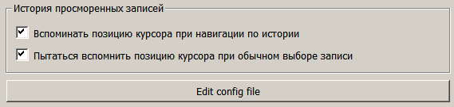

Если создавать кнопку QPushButton через код с минимальными настройками, то такая кнопка будет расползаться по ширине на все свободное пространство. Пример кода:
// Кнопка редактирования файла конфигурации
editConfigFile=new QPushButton(this);
editConfigFile->setText(tr("Edit config file"));
Выглядит это примерно так:

Но обычно нужно, чтобы ширина кнопки была установлена согласно содержимому, то есть согласно ширине размещенного на кнопке текста. Это можно добиться настройкой, производимой через метод setSizePolicy():
editConfigFile->setSizePolicy(QSizePolicy(QSizePolicy::Maximum,
QSizePolicy::Fixed,
QSizePolicy::ToolButton));
Результат добавиления такого кода выглядит вот так:
То есть, после такой настройки, кнопка начинает иметь минимально возможную ширину.